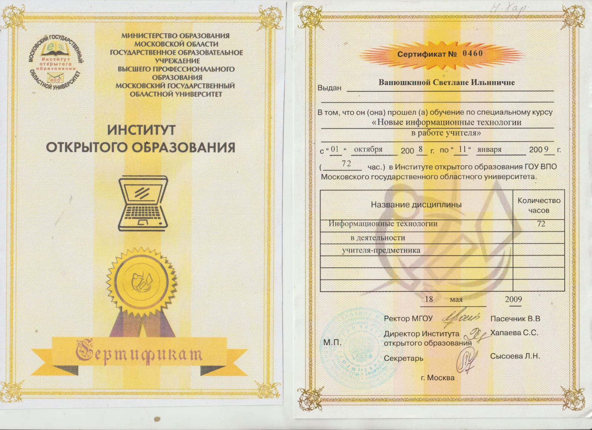
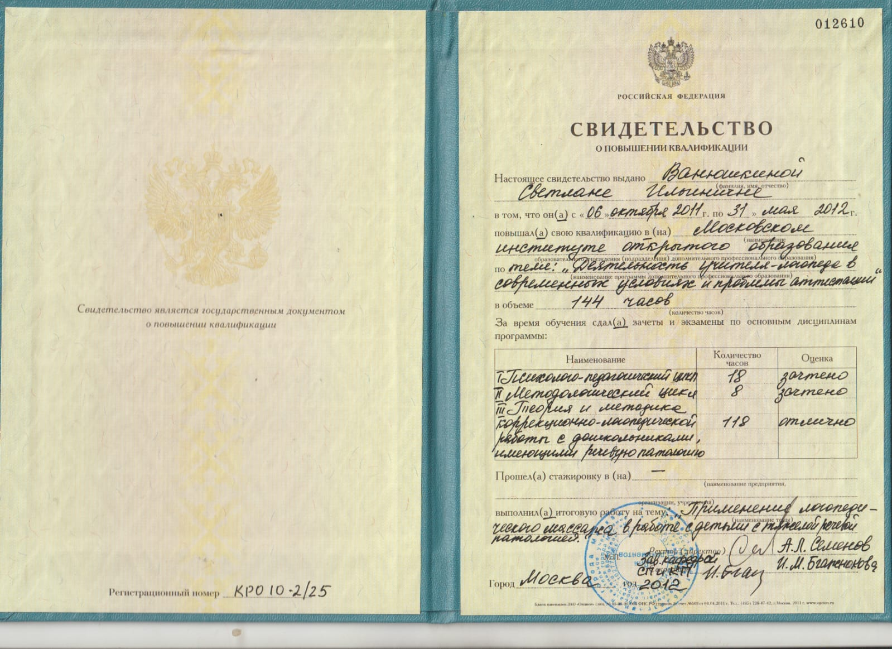
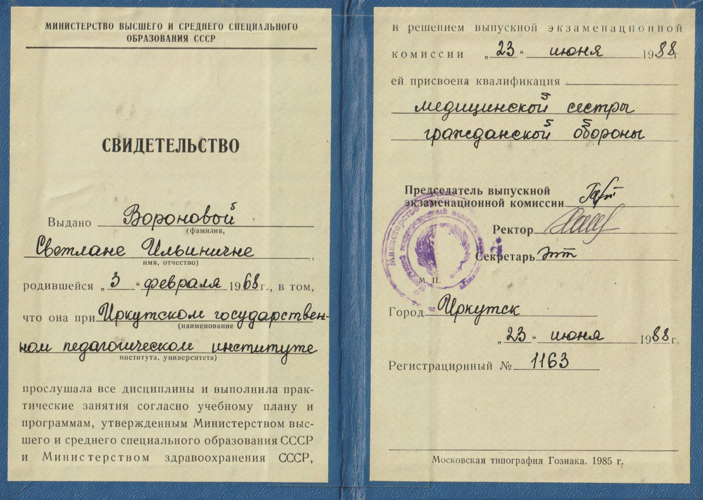
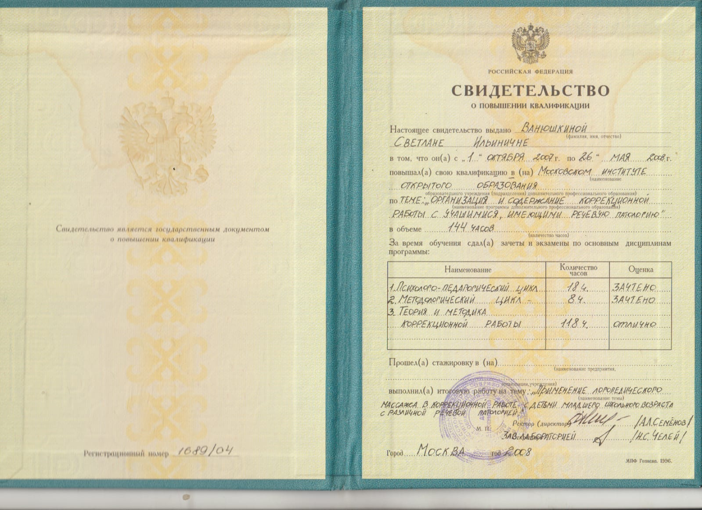

В работе сочетаю фундаментальное педагогическое образование, логопедический массаж, нейропсихологический подход и игровые технологии.
Специализация
Коррекция речи при органических поражениях нервной системы, дизартрических нарушениях, дислексии, дисграфии и логоневрозе (заикании) любой степени тяжести; реабилитация и восстановление речи после инсульта.
Образование и квалификация
- 1986 г. — Иркутский государственный педагогический институт, специальность «Олигофренопедагогика и логопедия».
- 1994 г. — «Лечебная косметика и общий массаж», квалификация медицинской сестры по косметике и общему массажу.
- 1996 г. — курсы логопедического массажа у профессора Е. Ф. Архиповой.
- 2008–2009 гг. — МГОУ, программа «Новые информационные технологии в работе учителя».
- 2015 г. — программа «Основы нейропсихологии» в Институте дефектологии и медицинской психологии.
- 2016 г. — курс медицинской логопедии в Учебном центре им. академика В. М. Шкловского.
Опыт работы
- 1989–1994 гг. — МДОУ № 20, г. Братск: работа с детьми с логоневрозом.
- 1994–1997 гг. — работа с подростками в паре с психотерапевтами по лечению логоневроза в Центре профессора Рожковского Г. В., г. Одесса.
- 1997–2007 гг. — детский реабилитационный Центр «Дом с ангелом» Литвака Б. Д., Одесса.
- 2007–2011 гг. — учитель-логопед МОУ Новохаритоновская школа № 10, г. Раменское.
- 2011–2014 гг. — методист дошкольных логопедов г. Раменское на базе диагностического центра «Диалог».
Уникальные навыки
Применяю медицинский подход в коррекции речевых нарушений, логопедический массаж, современные компьютерные и игровые технологии. Это помогает выстраивать индивидуальный коррекционный маршрут с учётом особенностей ребёнка.
Кому помогаю
- Детям с органическими поражениями нервной системы.
- Детям с дизартрией любой формы и степени тяжести.
- Детям с логоневрозом (заиканием).
- Младшим школьникам с трудностями чтения и письма.
- Взрослым после инсульта — при восстановлении речи.
Документы об образовании
 Высшее образование
Высшее образование
Сертификат МГОУ
Повышение квалификации
Медицинская квалификация
Коррекционная работа Основы нейропсихологии
Основы нейропсихологииЗапись на диагностику
Приглашаю вас на диагностику в Центр речи «Будущее».